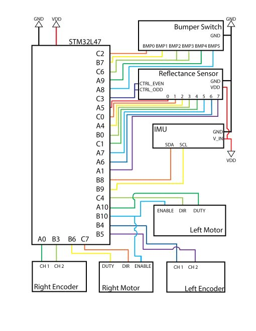
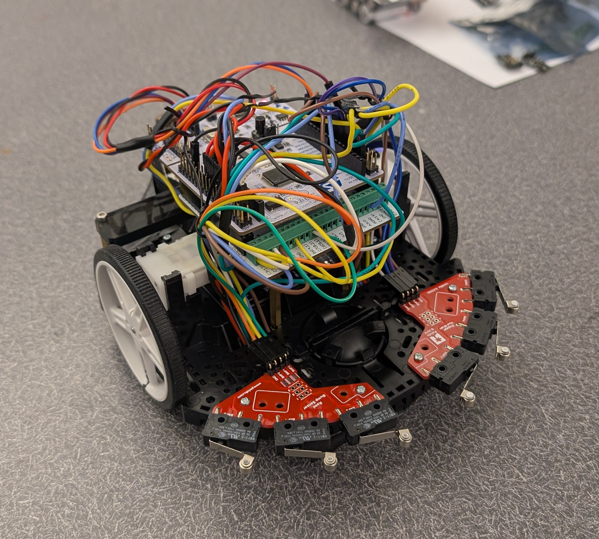
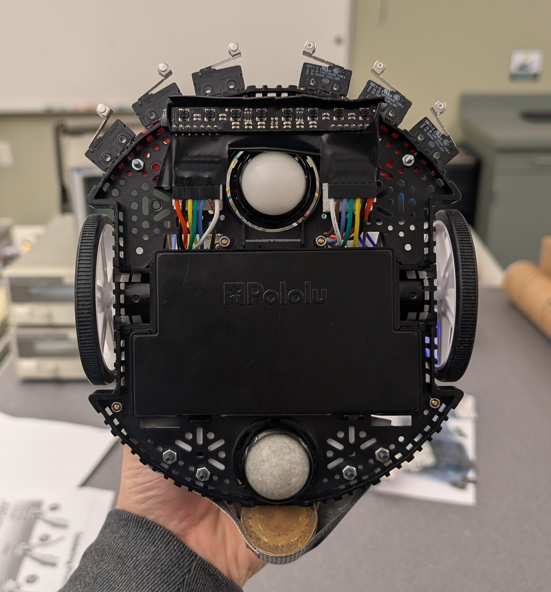
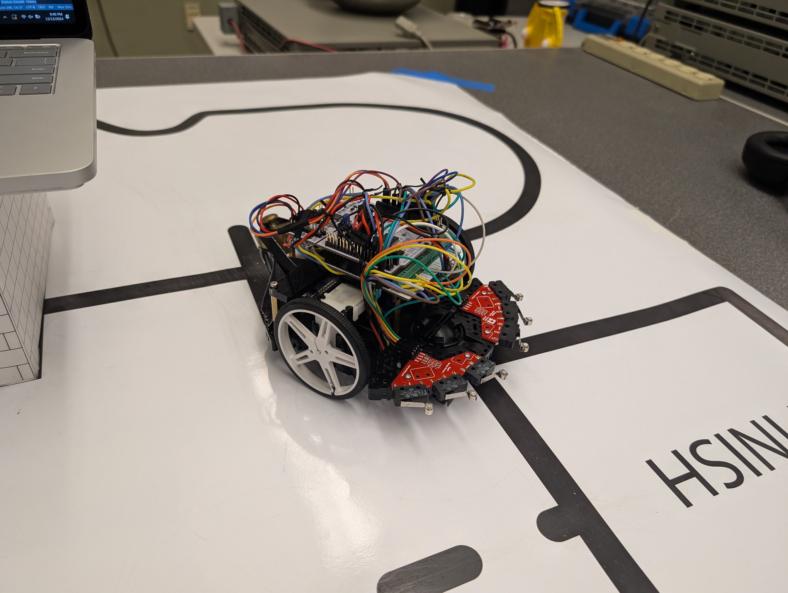

Loading...
Searching...
No Matches
ME 405 Term Project
Authors:
- Lili Boyer-Quick
- Julian Rubinstein
Brief:
In this project, our objective was to use a differential-drive robot to navigate around a course by following a line and navigating some obstacles. The main challenges were navigating the tight curves of the wavy section, going around the box in the middle of the course, and finally returning to the start box after the course is completed. All of these tasks were programmed using finite state machines and cooperative tasks to ensure that the program ran as efficiently as possible, given the restrictions of our microprocessor.
Hardware:
STM32 Nucleo-L476RG
- This microcontroller ran all of the code for the robot.
Shoe of Brian
- This board allowed us to interface with the Nucleo for flashing code and accessing pins through screw terminals.
Pololu Romi Chassis
- This chassis served as the base for all of the electronics.
Pololu RC Line Sensor
- This line sensor allowed us to read and follow a line.
Pololu Motors/Encoders
- These motor/encoder pairs allowed us to move the robot and accurately control wheel speed.
BNO055 IMU
- This IMU allowed us to capture information about the robot's heading for some of the tasks.
Pololu Romi Bump Sensors
- These sensors allowed us to determine when the robot has run into an object.
Wiring diagram for the ROMI and required electronic components:

Video showing Romi traveling from the start block to the far side of the obstacle. Romi navigates along the path using its reflectance sensor until it hits the obstacle. Then, Romi uses an IMU to navigate around the wall according to its heading. Unfortunately, we were unable to get Romi to consistently begin following the line again after navigating the obstacle, and were unable to capture it on video. Similarly, returning to start was not achieved consistently either, although attempts to do so were made.
Gallery
  